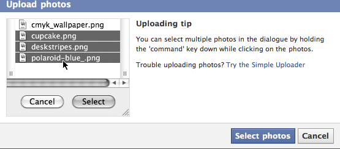

{% include JB/setup %}
{% raw %}
<div>
<div class="book" title="File Inputs"><div class="book"><div class="book"><div class="book"><h1 class="title1"><a id="I_sect17_d1e6148" class="calibre1"></a>File Inputs</h1></div></div></div><p class="calibre3"><a id="I_indexterm7_d1e6152" class="calibre1"></a><a id="I_indexterm7_d1e6157" class="calibre1"></a>File inputs, which have been around since the dawn of the
    Web, are the traditional way of letting users upload files. HTML5 improves
    on them, reducing some of their drawbacks. One of the long-standing
    bugbears for developers was allowing multiple file uploads. In the past,
    developers had to resort to a mass of file inputs or rely on a plug-in
    like Adobe Flash. HTML5 addresses this with the <code class="literal">multiple</code> attribute.<a id="I_indexterm7_d1e6164" class="calibre1"></a><a id="I_indexterm7_d1e6167" class="calibre1"></a> By specifying <code class="literal">multiple</code>
    on a file input, you’re indicating to the browser that users should be
    allowed to select multiple files. Older browsers that don’t support HTML5
    will simply ignore the attribute:</p><pre class="screen">&lt;input type="file" multiple&gt;</pre><p class="calibre3">The UI isn’t perfect, though; to select multiple files, users need
    to hold down the Shift key. You may want to show users a message to this
    effect. For example, Facebook found that 85% of users who uploaded a photo
    would upload <a class="ulink" href="http://www.zurb.com/article/515/podcast-of-julie-zhuos-talk-on-how-facebo">only
    one photo</a>. By adding a tip that explains how to select multiple
    photos to the uploading process, as shown in <a class="ulink" href="ch07s03.html#fig_7_1" title="Figure 7-1. Uploading multiple files on Facebook">Figure 7-1</a>,
    the metrics dropped from 85% to 40%.</p><p class="calibre3">Another problem for developers was not having any information about
    which files had been selected. Often, it’s useful to validate the selected
    files, making sure they’re a certain type or not above a certain size.
    HTML5 makes this possible now by giving you access to the input’s selected
    files, using the <code class="literal">files</code>
    attribute.</p><p class="calibre3">The read-only <code class="literal">files</code> attribute
    returns a <code class="literal">FileList</code>, which you can
    iterate through, performing your validation, and then informing the user
    of the result:</p><pre class="screen">var input = $("input[type=file]");

input.change(function(){
  var files = this.files;

  for (var i=0; i &lt; files.length; i++)
    assert( files[i].type.match(/image.*/) )      
});</pre><div class="book"><div class="figure"><a id="fig_7_1" class="calibre1"></a><div class="book"><div class="book"><a id="I_mediaobject7_d1e6203" class="calibre1"></a></div></div><p class="title4">Figure 7-1. Uploading multiple files on Facebook</p></div></div><p class="calibre3">Having access to the selected files doesn’t limit you to validation,
    though. For example, you could read the file’s contents, displaying an
    upload preview. Or, rather than having the UI block as the files are
    uploaded, you could upload them in the background using Ajax, displaying a
    live progress bar. All this and more is covered in the subsequent
    sections.</p></div></div>

{% endraw %}

